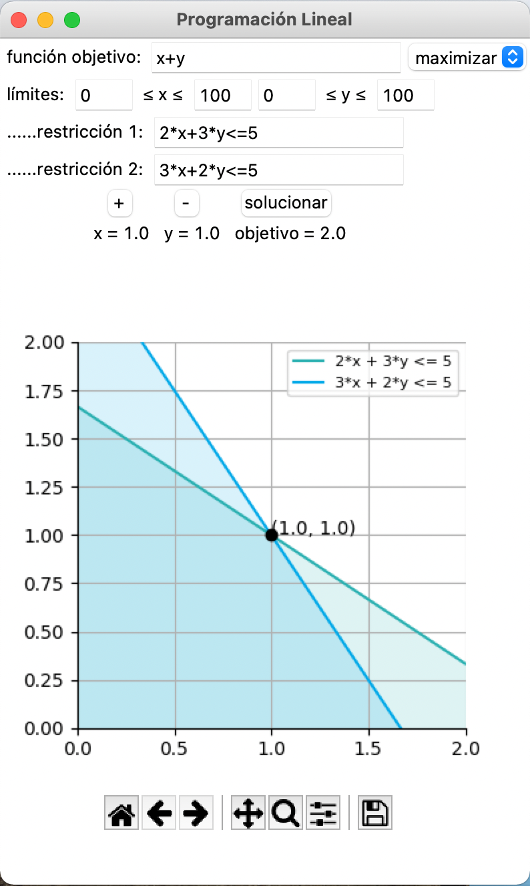
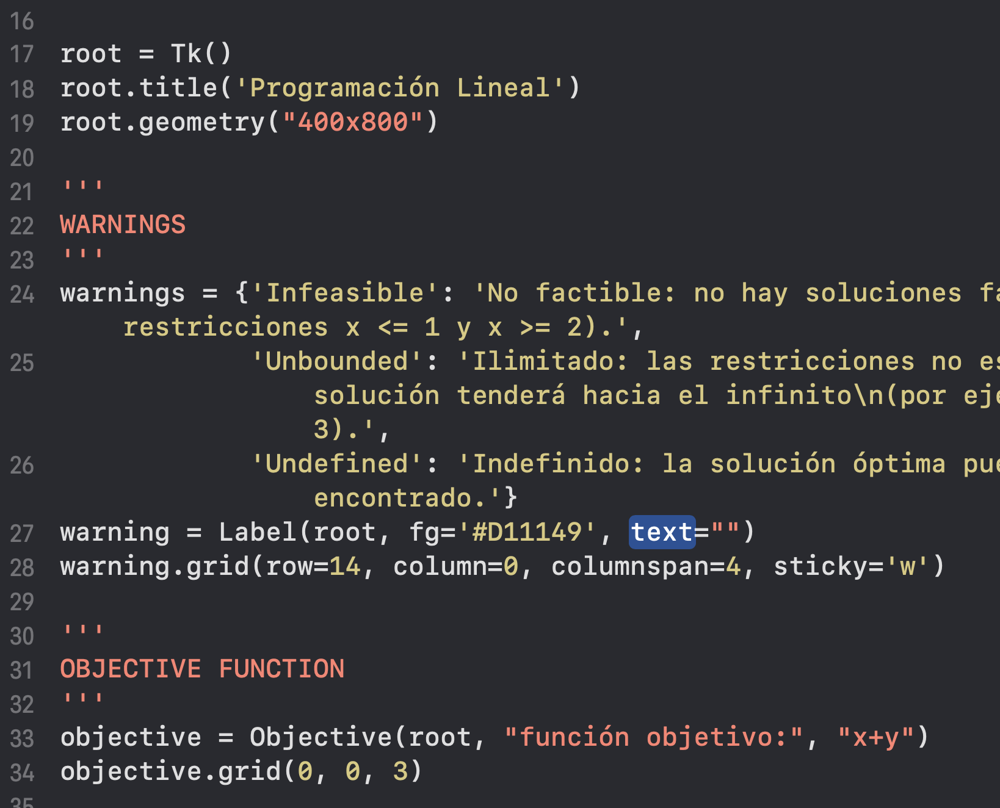

Scot Nielson
<<< back
"Programación Lineal" LP Graphical Solver Interface

This semester I've been doing more freelance work, just a bit of data analytics here, some programming there...but this project united them all in one. A group of students in Mexico messaged me in need of an interface that could solve Linear Programming problems. They were taking a course in Python and wanted to have access to a project from start-to-finish that was also in Spanish. Programming bilingually was a bit of a new challenge, but an immensely rewarding one.
The interface, which can be downloaded from Github, uses Tkinter to create the GUI, PuLP to solve the linear system given an objective function and a set of up to 10 constraints, and plots the solution using Matplotlib.
